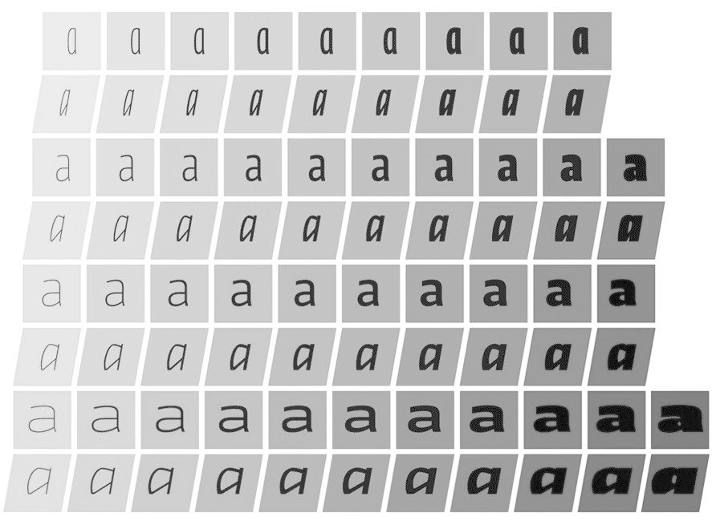

Thoughts on OpenType Font Variations
If the ending surprises you, maybe you should spend more time on the committees that make technology standards.
Last week, an update to the 20-year-old OpenType font standard was announced, called OpenType Font Variations. It’s being driven by the usual suspects—Google, Apple, Microsoft, and Adobe. Also participating are an assortment of independent tool developers, and—always valued for their swimming skills—individual type designers.
Without diminishing the effort that’s been put into this new standard, I’m not convinced there’s a plausible rationale for it. It would impose significant costs on type designers, provide no obvious advantage to our customers, and mostly benefit a small set of wealthy corporate sponsors.
Below, I’ll explain my reasoning. But agree or disagree, I hope other type designers will give this proposed standard the critical scrutiny and reflection it deserves. Because if we end up at the bottom of the river, we won’t be able to say we didn’t know who was riding on our back.
OT Font Variations is an update to the OpenType font format that will allow font files to contain multiple sets of outlines. Today, a single font file can only contain one set of outlines. So a font family with, say, weight and width variants has to be rendered into a matrix of individual fonts:

But under the new standard, the width and weight variations can be packaged into a single font file.
Furthermore, customers will be able to interpolate between styles. So rather than, say, a set of discrete weight options:
Weight becomes continuously variable, and a customer can choose anything in between:
This idea is not new. In the early ’90s, Apple and Adobe launched competing font-interpolation systems. Apple’s was called TrueType GX; Adobe’s was called Multiple Master fonts. Apple’s had the advantage of being built into the Mac OS. Adobe’s had the advantage of being supported by PostScript and PDF.
In fact, during 1993, I was one of several type designers who worked with Matthew Carter on Skia, a font with weight and width variants that Apple commissioned to show off TrueType GX. In true time-is-a-flat-circle fashion, Skia has a starring role in Microsoft’s new OT Font Variations white paper. (Pearl Jam, unfortunately, was not available as an opening act.)
The lesson: if the customer doesn’t benefit, no one can.
The stagnation of digital-font formats is one of the most nettlesome aspects of type design. OpenType has now been with us for nearly 20 years (its parent, TrueType, has been around for 25). One of the distinguishing features of OT Font Variations is that it’s not meaningfully backward compatible with OpenType. Essentially, it’s a new format that proposes to eventually supplant today’s OpenType font families.
In one sense, it’s interesting to think that the fonts I ship to customers today could be installed and used equally well on a Windows 95 machine. But in most senses, it’s pointless. Because in practice, my fonts will never be used on computers from that era.
The converse is not true, however. Fonts made 20 or more years ago are still usable on today’s machines. In fact, they make up the bulk of the Monotype and Adobe font libraries. Many remain on today’s bestseller lists. So in fonts, unlike other categories of software, type designers have a peculiar problem: our new work has to compete against decades of accumulated competitors.
Is that a good thing? In terms of turning over inventory, no. All technology companies depend on a certain level of obsolescence. It creates recurring revenue, of course. But it also helps avoid the escalating costs and constraints of backward compatibility.
Moreover, this is a new situation for type. Long ago, when type was made of wood and metal, it would naturally wear out with use, and need to be replaced. In the 20th century, advancements in typesetting technology meant that font libraries would have to be tossed out and replaced with new formats. So obsolescence was always in the mix. These days, digital fonts seem endlessly durable.
Still, these historical comparisions are strained. Now 30 years old, digital typefounding seems mature relative to other digital technology. But relative to other typefounding technology, it’s just a blip. For most of typesetting history, being a typefounder meant spending your career near molten metal and carcinogens, not an Aeron chair and Keurig coffee pods.
Furthermore, though I’ve complained about the persistence of digital fonts in the past, it veers toward one of my least favorite arguments: the idea that a creative person has a right to make a living from their work. Sorry, but no one does. The market—though artificial and imperfect—sets the rules. Other fonts exist. Hundreds of thousands, in fact. As type designers, we can either deal with that fact, or find something else to do with our time.
To be fair, format stagnation isn’t all bad. As a result of running my own type foundry for the last five years, I’ve learned firsthand that no matter how much customers love fonts, they’re looking for a low-maintenance relationship. Possibly complicating this relationship is the fact that fonts are called upon to perform in a countless combinations of operating systems, typesetting programs, and output devices. But in practice, fonts just work. This is miraculous. As an independent type designer, if I had to troubleshoot every setup separately, I couldn’t stay in business. As it stands, I get almost zero support requests.
Why is this possible? Because font formats have been so stable for so long. I have to imagine the calculus is similar for other independent type designers. So yes, format stagnation is bad for business in the sense of putting a ceiling on what we can accomplish. But it’s arguably a necessary ingredient for independence.
Coming full circle, though it’s tempting to fiddle with the mile-high Jenga tower that comprises today’s font-technology stack, there are risks as well. Not of the
The lesson: Be careful what you wish for.
Though neither TrueType GX nor Multiple Master fonts caught on, Adobe and Microsoft collaborated on the OpenType specification in the mid-’90s. (Apple joined in later.) The impetus for this change was not aesthetic, but practical: in order to support the more complex written languages that are common outside the US and Europe, fonts and layout systems needed to be more sophisticated. And without support for those languages, nobody could sell their products in those parts of the world.
Needless to say, with huge economic incentives on the table, the new format took off. Well, sort of: the parts of OpenType that supported new language systems took off quickly. What didn’t were the parts, like OpenType features, that improved typography in current language systems.
For instance, though the OpenType specification was released in 1996, Microsoft Word didn’t support OpenType features until 2010. Excel and PowerPoint still don’t. Apple stopped supporting OpenType features in Pages for several years, in deference to its iOS version. And today’s crop of web browsers support these features with different levels of competence.
The lesson: when customers and corporations definitely benefit (e.g., OpenType language support), designers can too. When customers and designers might benefit (e.g., OpenType typography features), corporations are unreliable.
The last collaboaration between the scorpions and the frogs was WOFF (= Web-Only File Format). In 2009, the near-total absence of fonts on the web had become a source of frustration for web designers, who blamed type designers for embargoing the global font supply, like some scheming Bond villain (Dr. No Kerning? Glyphfinger?)
Some type designers, wisely sensing an opportunity for a diplomatic resolution, proposed what became WOFF—a format derived from OpenType that would put fonts into browsers quickly while protecting type-designer interests (mostly, by making it harder to copy and use webfonts on the desktop). Browser makers got involved. The W3C got involved. Soon, WOFF was off to the races. That was the good news.
I wasn’t involved in WOFF. But it’s no criticism of those who were to observe that this kind of outcome has never been unusual at the W3C, or within any standards process. Those who can pay to protect their interests often do. Those who can’t, don’t.
Moreover, one of the by-design side effects of a standards process is to achieve political peace with possible future opponents. When you provide opponents an opportunity to be heard, they’re permanently disarmed. How can anyone complain about the result of a process that they participated in?
The lesson: when customers and corporations benefit, designers should think twice about standing in the way, because our negotiating leverage is limited.
WOFF2 is an update to WOFF that was first proposed in May 2014. Unlike WOFF Classic, WOFF2 was not a collaboration between type designers and browser makers. It was just something Monotype and Google wanted. And, since they’re both paying members of the W3C, they got it.
Why did they want it? The only significant change in WOFF2 was that it added a new compression scheme that can make font files smaller. Why did Google and Monotype want smaller files? Because they’re two of the three biggest providers of hosted webfonts. (The other is Adobe, who supported it quickly.) Cut your file sizes = cut your hosting bills. Simple. For customers and designers, it was met with a shrug, since WOFF2 didn’t change anything inside the font.
The lesson: when corporations benefit, and customers and designers are unaffected, they get what they want.
Network latency—that is, the number of requests a web page makes to various servers multiplied by how long each takes to establish—is the real bugaboo. In 1996, a web page might have made a few requests to download images. These days, thanks to the nothing-but-advertising
For Google in particular, we should shed a giant crocodile tear whenever it concern-trolls us about file sizes on the web. YouTube (owned by Google) consumes an astonishing 18% of all Internet bandwidth, second only to Netflix (an eye-watering 37%). The file sizes of fonts—geez, that seems low on the list of the Internet’s bandwidth problems.
FWIW, since 2013, Practical Typography has been an ongoing experiment in extreme webfonting. I’ve pushed about a megabyte of fonts to millions of readers, who are using all kinds of web browsers and platforms (including mobile). Total complaints I’ve received about page performance: zero. Of course, I don’t have ads or trackers either. So it’s a question of priorities.
For reasons unclear, this claim about network latency has always provoked howls of outrage among the web-dev Twitterati. Folks, let’s work from evidence, not superstition. For example, here’s a quick test I did this week, with home pages ranked in order of load time. As you can see, load time correlates more strongly with number of requests than download size. And Practical Typography beats everyone but the world’s biggest corporation. Since I only pay $6 a month for hosting, I can live with that:
| website | bytes | requests | load time |
|---|---|---|---|
| apple.com | 1.9 MB | 47 | 0.62s |
| practicaltypography.com | 1.8 MB | 10 | 1.21s |
| medium.com | 1.4 MB | 55 | 1.37s |
| alistapart.com | 0.54 MB | 45 | 1.44s |
| stackoverflow.com | 0.36 MB | 43 | 1.60s |
| microsoft.com | 1.8 MB | 119 | 1.87s |
| youtube.com | 2.1 MB | 165 | 2.39s |
| yahoo.com | 2.6 MB | 117 | 2.56s |
| amazon.com | 3.9 MB | 128 | 2.58s |
| adobe.com | 2.0 MB | 218 | 2.65s |
| nytimes.com | 5.4 MB | 501 | 5.20s |
The basic improvement offered by OT Font Variations—interpolated fonts—has already failed twice in the market. What’s the justification to try it all again?
With commendable candor, type designer John Hudson, who worked on OT Font Variations, has tried to address this question.
The bad news is that unlike previous evolutions of the TrueType/OpenType lineage, OT Font Variations requires
But sometimes this is the price of progress. What will be the benefit of all this upheaval? According to John,
That sounds like WOFF2. Sure, corporations that serve a lot of fonts over the network will always want to make them smaller, thereby saving money. But as we saw above, that’s not likely to benefit type designers or customers.
The file-size savings may be overstated anyhow. For instance, a Microsoft manager gave the example
That sounds like TrueType GX or Multiple Master fonts, which went nowhere with customers, or OpenType typographic features, which went nowhere with corporations who had to build support for them. First, since we’re being candid, most professional graphic and web designers don’t care much about fonts at all. (For instance: Oxford University Press, one of the most respected book publishers, nevertheless sets nearly all its books in Minion,
What’s more, font licensing as a business can only be as healthy as the industry it serves. In this case, if OT Font Variations is largely being pitched as an improvement for the web, we ought to ask: how much money is there is in web publishing? The answer: not damn much. (My font-revenue reports for the first six years of the webfont era back that up.) To my mind, that’s another big difference from OpenType 20 years ago, which was introduced into what was still a healthy print-publishing industry. (My font-revenue reports back that up too.) As an independent designer, I can’t do much with technological potential unless it also implies revenue potential.
That sounds like the language-support aspects of OpenType. If broadening the market for technology products is the best argument for revising font standards, then this will likely end up being the best rationale for OT Font Variations. But for type designers who work with Western scripts—which describes the majority of professional type designers, me included—it doesn’t move the needle. The original OpenType spec let us expand our reach into other Western-script markets (e.g., Esperanto and Maltese), because those languages were basically similar to languages we already supported (e.g., English and French). But fonts for East Asian languages are a completely different kettle of fish.
In saying that, I take nothing away from the type designers who make East Asian fonts. For them, OT Font Variations might be huge. Wonderful—may they profit greatly. In time, the Western corner of the type market might even look comparatively small. Wonderful—I will be doing something else by then.
As a designer, I’m sure OT Font Variations would be entertaining to work with. But from what I can see, there’s no evidence that my customers are interested in that capability—let alone prepared to open their wallets for it. Therefore, the benefits don’t outweigh the significant cost of losing backward compatibility (meaning, packaging font families into a new format that’s not supported by any platforms or applications currently in use).
On the contrary, based on historical patterns, it’s easy to imagine a scenario where I spend a lot of time developing OT Font Variations that basically nobody wants, and the few who do buy them discover that they rarely work as advertised. If this seems sullen or hard-hearted, no—type designers have to make these choices all the time. I often get asked to support new character sets—Greek, Russian, Vietnamese, math & science, and so on. These would all be fantastic projects. But I can’t reach enough paying customers to make any of them worthwhile. If type design were my hobby, I’d be delighted to pursue these projects. But since it’s my work, I have to pass.
John also summarizes how far the corporate participants have progressed with OT Font Variations. With this, we can make some educated guesses about what they’re getting out of it:
The hate each other. Office is in a separate division from Windows, which is why OpenType support in Office has lagged far behind OT support in Windows: if a feature doesn’t sell more copies of Office, they’re not much interested in implementing it.“ Windows engineering team at Microsoft” is planning to add support for OT Font Variations in 2017. That sounds great, unless you know anything about the culture at Microsoft, where every division sets their own development agenda, and they basically allUnlike Office, the Edge web browser is part of the Windows division, so it’s likely to support OT Font Variations sooner. John notes that
the browser team is also working on a never been eager to support them.“ formal proposal for support of variable fonts in Cascading Style Sheets (CSS) for the Web.” Again, that sounds great, unless you know anything about the culture at Microsoft. They’ve always been eager to make web standards, andI predict: Don’t bet against history. Regardless of Microsoft’s participation in OT Font Variations, Office may not meaningfully support it for decades; Edge may not meaningfully support the web-standard version of it ever.
Apple characteristically, [is] least forthcoming“ about future plans, but they have a head start on variable font support in their TrueType GX infrastructure.” GX dates from 1993, so I’m skeptical how much of a technical “ head start” Apple really has, when everything else in the Apple ecosystem is completely different. (That was also the last time Apple took any kind of leading role in font technology.) Apple’s business has also completely changed since 1993. Then, they were primarily a desktop-computer company; now, they’re primarily a mobile-phone company. Their support for OT Font Variations likely reduces to the question of whether it will help them sell more iPhones in China and elsewhere in Asia.I predict: Apple will follow their original OpenType strategy—let everyone else go first, and implement the standard only if it proves to be valuable in the mobile-phone market.
Update 160923: I was wrong about the wait-and-see: in the new Sierra OS, apparently certain Apple system fonts rely on OT Font Variations.
Adobe’s font-technology team is updating its tools
for font developers, but there are “ no details about support for variable fonts in Adobe’s application suite.” As with Microsoft, Adobe’s application group is a different division with different priorities. I don’t think they hate each other as much. But CreativeSuiteCloud is Adobe’s cash cow. They’re not going to let OT Font Variations mess with those teats. Adobe also carefully protects its relationships with big publishers and printers. They’re not going to let OT Font Variations foul them up (especially after recent misfires like Adobe Digital Editions).I predict: Adobe will exert minimal effort to support OT Font Variations for Western fonts. Though consistent with ’90s nostalgia, they will release versions of Myriad and Minion in the new format (and they better bring Pearl Jam to Adobe MAX this year). Otherwise, they’ll reserve most of their effort for supporting OT Font Variations in East Asian fonts.
Finally, Google has apparently been working
on variable-font technology for two years, getting it ready for just as terrible as the originals. But since Google has no customers in professional publishing, and no taste, everything will still be awesome.“ Google Chrome [and] the Google Fonts webfont platform.” That’s no surprise. First, we know Google saves money with small files. Second, Google Fonts shifted its focus to East Asian scripts a while ago, having conquered the west. Third, because Google spends more freely than Adobe or Microsoft, and they’ve already amassed an army of underpaid type designers, these designers will probably be deployed to convert many existing Google fonts to the new format. These fonts will beI predict: Google will continue to be the most vigorous early adopter of OT Font Variations, but the benefits will be restricted to the Googleverse.
I could’ve discussed problems with specific technical aspects of OT Font Variations (e.g., if this format won’t be backward compatible, why stick with a binary-table structure held over from the ’80s? Or why is interpolation the only kind of transformation supported?)
But there’s no point. Market considerations will always override technical considerations. Thus, to forecast what will happen with OT Font Variations, it’s far more important to consider the market interests of the stakeholders, rather than the particulars of the format. The how is less important than the what and why.
As John says
But look across this history, and a simple principle emerges. It’s a cliché, but as usual, the customer is always right. When type designers have accepted what customers want (e.g., better OpenType language support) the market has rewarded us. When type designers have resisted what customers want (e.g., easy access to webfonts) the market has punished us.
Why does this principle work? First, because customers pay us—duh. Second, because the corporate participants in the type market have to serve those same customers. Ultimately, they can’t afford to alienate customers any more than we can. So where the customers lead, everyone follows.
The corollary to this principle is that when customer demand is removed from the picture, things get murky. In this case, we might ask: if the OT Font Variations standard has been built outside the practical influence of customer demand, then who does it serve?
The idealist might say that a standard provides a level playing field for market participants. But in practice, standards tend to reflect the interests of whoever has the most weight to throw around.
The idealist might also say that new standards are necessary for techological progress. But in the market, the costs of progress end up being strictly weighed against the benefits.
Ultimately, I see no evidence that OT Font Variations is something my customers want. But I see plenty of evidence that it will help Apple, Google, et al. sell more products in certain countries, or save money on bandwidth. I’m sure these corporations would love more help from type designers to make their technology look good. And if you want to go for a swim, don’t let me stop you. But this frog is going to stay right here on the side of the river, where it’s sunny and dry.
20 Sept 2016
I’m necessarily glossing over a lot of details in 30 years of font-format history. I welcome clarifications and corrections if you feel I short-shrifted something vital.
I’ve ended up making more predictions than I expected. If they don’t come true, I promise to note where I was wrong. I might be updating this piece for 20 years, however.
Wired has published a breathless introduction to OT Font Variations. Time between the announcement
of this unreleased technology and the first claim that it has “ virtually infinite” possibilities: eight days.Practical Typography uses a font-variations kind of trick to serve different grades of the body text font, Equity, to different platforms. For instance, Windows users get a slightly heavier version than Mac users, to account for lighter screen rasterization. All this can be done easily with today’s technology. But I seem to be the only person on the Internet who was sufficiently motivated to try.